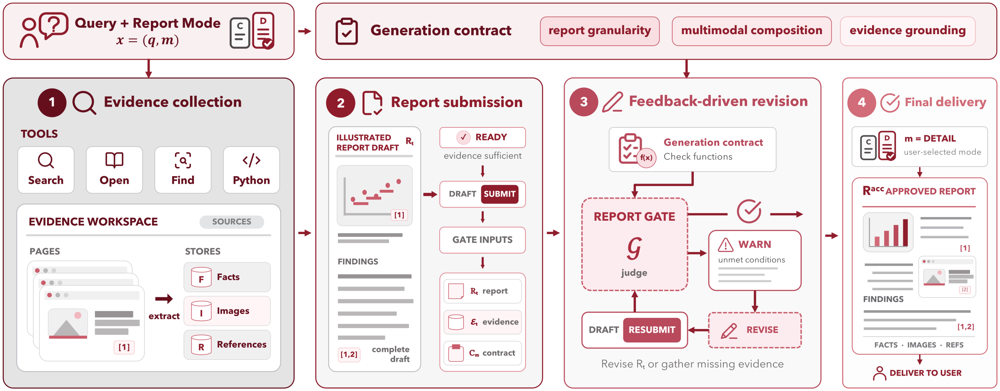
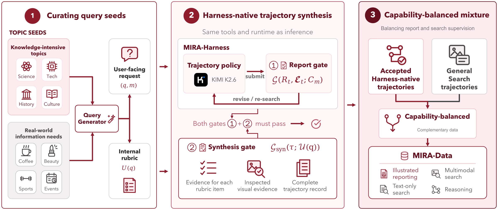

Replayed from two recorded MIRA-Harness runs, the ones in the case study below: Roman maritime concrete in Concise mode and traffic-flow visualization in Detail mode. Requests, queries, pages, images, gate checks and timings come from the run records; the playback is faster than the runs were, and the status line shows recorded time.
Deep research agents are increasingly capable of searching the open web and synthesizing evidence, yet they remain poorly suited to controllable report generation in multimodal deep research: handling interleaved textual and visual inputs, gathering multimodal evidence through multi-step web search, and delivering comprehensive illustrated reports under user-specified requirements. Existing systems underuse images discovered along the search trajectory and produce fixed-form answers with limited control over report granularity, multimodal composition, and evidence grounding. We introduce MIRA, a Multimodal Illustrated Deep Research Agent for controllable reports. At its core, MIRA-Harness translates user requirements into generation contracts and connects four stages: evidence collection, report submission, feedback-driven revision, and final delivery. Building on this harness, MIRA-Data constructs high-quality multi-hop multimodal research trajectories, and we post-train foundation models to operate within the workflow. Using Qwen3.6-35B-A3B, MIRA achieves state-of-the-art performance among open agents on 7 representative, established multimodal-search and deep-research-agent benchmarks, while producing user-aligned illustrated reports with traceable textual and visual evidence.
State of the art among open agents on seven representative benchmarks
Hover a bar for its score, toggle models in the legend, and click a benchmark name to jump to its column in the table.
Bold: best outside the large-scale frontier models. “–”: not reported.
A generation contract drives research, submission, and revision

Trajectories synthesized inside the harness, gated, then balanced

Research requests answered end to end, from tool calls to illustrated reports
The first request is replayed call by call, including the drafts the report gate sent back for revision. All three requests come with their Concise and Detail reports, annotated as in the paper's appendix: request terms, checked facts and image boxes, paper notes, and trace lines back to the run.
Recorded inside MIRA-Harness: each square is one tool call, one column per assistant turn. Hover a square to see the call. A cross marks a draft the report gate rejected, a tick the accepted one; the tinted band is the revision that followed.
BibTeX
@article{mira2026,
title = {MIRA: A Multimodal Illustrated Deep Research Agent for Controllable Reports},
author = {Wu, Hongrui and Tuo, Kaiwen and Wang, Congcong and Li, Gen and Dong, Shuai and
Yu, Xinlei and Xu, Yuqi and Hou, Haowen and Peng, Zelin and Wang, Jiaqi},
journal = {arXiv preprint arXiv:2610.25926},
year = {2026}
}